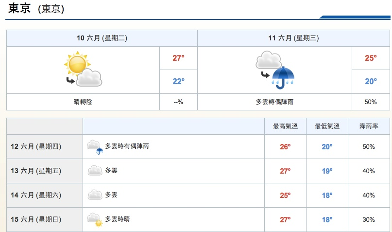

太陽鳩屋・伊勢龍蝦・鮑魚・迪士尼・溫泉饗宴五日
基本資訊
出發日期
- 2014 年 06 月 11 日
參考航班
- 台北/成田 達美航空公司:DL276 09:10/13:25
- 成田/台北 達美航空公司:DL275 18:50/21:25
費用說明
- 每人團費 34,000 元
-
費用包含
- 機場稅、燃料稅、行政雜支。
- 200 萬契約責任險及 20 萬意外醫療險。
- 公司至桃園機場來回接送。
- 領隊、導遊、司機小費。
- 住宿、行程中所附註之餐食。
-
費用未含
- 新辦護照 NT1,500(護照效期需有出發日+半年以上之效期,始得出國)。
- 當地行李、床頭小費及個人花費。
匯率
- 1 NTD = 3.41 JPY
- 1 JPY = 0.29 NTD
- 即時匯率
天氣
代辦旅行社
- 連發國際旅行社
- 40676 臺中市北屯區中清路二段 20 號 2 樓
- 886（04）2299 - 3000
第一天
行程
- 台中
- 桃園 / 東京 (成田空港)
- 明治神宮
- 東京都內
餐食
- 連發贈送早餐
- 機內精緻美食
- 涮涮鍋料理餐或日式風味定食餐
住宿
第二天
行程
- 東京
- 迪士尼樂園
餐食
- 飯店內早餐
- 遊園方便，敬請自理
- 遊園方便，敬請自理
住宿
第三天
行程
- 蘆之湖海盜船遊湖
- 箱根神社
- 太陽鳩屋
- 海灣購物中心
餐食
- 飯店內早餐
- 富士蘆之湖御珍饌或日式風味餐
- 日式溫泉懷石料理+炭烤鮑魚+餐廳
住宿
-
太陽鳩屋 SUN HATOYA
-
Feature
- 晚餐劇場視聽嚮宴：豪華艷麗的歌舞表演秀,視聽效果極佳,滿足您視覺與聽覺上的享受,讓此 次旅程為您留下美好的回憶。
- 伊東溫泉懷石料理：精心選用山與海所賜給的新鮮天然食材,為您準備了多道豐盛的「日式溫泉 懷石料理」,請盡情地享受。
- 房內獨立天然溫泉：有別於一般大浴湯,此處還有海邊的露天浴池等各式完善的設施,讓您的身 心得到療效、一掃疲累煩惱。
- 世界三大海底溫泉：日本獨創、從一千公尺海底湧出的「海底溫泉」,可以一面泡湯、一面觀賞 海底魚群自在地悠游於其中。
- 日式風格觀景套房：每間客房均為「日本風格觀海套房」,在您眼前呈現的是伊東蔚藍海面以及 映照著點點漁火的浪漫夜景。
- Link
-
Feature
第四天
行程
- 金龍山淺草觀音寺
- 隅田川遊船水上巴士
- 行車經過東京晴空塔
- 免稅店
- 台場海濱公園散策
- 東京灣浪漫夕彩
餐食
- 飯店內早餐
- 東京城下町風味定食
- 道地風味拉麵定食
住宿
-
成田東武機場飯店
第五天
行程
-
東京首都圈自由活動
- 澀谷
- 新宿
- 下北澤
- 築地市場
- 六本木中城
- 成田空港
- 台北
餐食
- 飯店內早餐
- 逛街方便，敬請自理/
- 機上精緻套餐+連發贈送宵夜點心
旅遊須知
日本手機使用注意事項
日本是一個手提電話（攜帶電話）很普及的國家，但在日本限制使用手提電話的地方卻很多，特別是在公共場所，比如在電車上。一般情況下，日本人不在車上打電話，如果是接電話，也要把聲音壓到最低限度，三言兩語，簡明扼要地應答，待下車後再重新給對方回電話，否則會給周圍人帶來不快。
日本手機使用注意事項
日本是一個手提電話（攜帶電話）很普及的國家，但在日本限制使用手提電話的地方卻很多，特別是在公共場所，比如在電車上。一般情況下，日本人不在車上打電話，如果是接電話，也要把聲音壓到最低限度，三言兩語，簡明扼要地應答，待下車後再重新給對方回電話，否則會給周圍人帶來不快。
日本手機使用注意事項二
日本的高級餐廳、醫院、劇院等公共設施一般也都禁止使用手提電話。在電車上一般還有為使用心臟起搏器的乘客準備的專座，在專座附近禁止使用手機。
日本乘車須知一 排隊乘車 女性專用車輛
在日本乘坐電車時，乘客應在乘車口處（地上塗有標記）按秩序排隊，待車停後乘客在車門兩側分成兩行，等下車乘客下完後再上車。每逢電車到站，電車上的乘客要注意不要站在車門口處，以免妨礙其它乘客上下車。如處於高峰擁擠時，站在門口處的乘客應暫時先下車，待下車乘客完畢後再上車。為防止性騷擾，日本有的電車公司還特別安排了晚11時後的女性專用車輛，男士們一定要注意看好再上車，不然有可能會被人當作“癡漢（進行性騷擾的男人）”交給警方。
日本乘車須知二 優先席 禁用手機
在日本搭乘電車時，還要注意左側優先席標記。所謂優先席就是此處的坐席凡老幼病殘的乘客或孕婦可優就座，其它乘客要禮讓。同時，此優先席一般也是使用心臟起搏器的乘客的專座，附近還指定為禁止使用手機的區域，因此在電車上優先席附近不要使用手機。【日本漫遊編輯部】
日本乘車須知三 巴士 出租汽車
搭乘巴士時，要事先準備好買票的零錢，上車後投入自動售票機內。如是在非忙時間段，下車前需按一下車內兩側設有的下車按扭，否則汽車有不停的可能。日本的巴士多是前門上後門下。乘座出租汽車（迪士）的方法與中國大陸、香港、台灣相同。只是出租車門由司機控制，上下車乘客無須自己關開車門。
關於搭乘日本自動扶梯
自動扶梯在日本極為普遍，日本人搭乘自動扶梯時，一般習慣站在左側（關東的東京地區，而關西大阪地區習慣右側站立，左側急行），將右側讓出留給急於前行的人。如兩個人同時並排站在自動扶梯當中，將會阻塞通道，妨礙其它人行動。搭乘自動扶梯時，一般應和前面的人（特別是男性前面有女性時）相隔一個台階，保持一定距離，以免不必要的誤會。
關於日本衛生間的使用
在日本使用衛生間，有可能遇到以下情況： ○在有些餐廳等場所的衛生間為男女共用。遇到這樣的洗手間，女性可進入洗手間單間後鎖門使用，男士可照常使用外邊的小便池，不必大驚小怪。 ○打掃紳士衛生間的清潔員一般為歲數稍大的女性，男士們可不必在意她們的進進出出。 ○有些場所的衛生間要換拖鞋進入，注意不要將衛生間內專用的拖鞋穿到衛生間之外。
關於日本禁止吸煙的規定
在日本，有些地方自治體已經立法將一些公共場所指定為禁煙區域，如車站、機場、地鐵、街頭、醫院等，凡在指定的禁煙區域內吸煙，違反日本的法律，將有可能受到處罰。但同時日本的公共場所也有指定的專用吸煙處，如要吸煙，請到吸煙處去吸。
關於日本的小費
在歐洲等地，遊客為酒店的門童、導遊或餐廳的服務生付一定的小費是當地的習慣。而在日本則沒有這個必要，因為日本是個不收取小費的國家。在日本全國各地，無論是在酒店，還是餐廳、旅遊景點或搭乘旅遊巴士，均無付小費規矩。到日本旅遊的遊客要切切記住這一點。
日本的酒店一般收取房費的10％的服務費，餐廳在消費額超過一定金額時按日本政府規定收取一定比例的服務稅，因此日本沒有額外收取小費的習慣。如果在日本有人要求遊客付小費，這不是出於日本的習慣，而是出於要求付小費的人自己的動機，遊客一定要三思而行。
日本溫泉入浴須知
日本的溫泉入浴方法很多，其中要注意的有以下幾點： ○入浴前不要酗酒，大量飲酒後入浴有可能引起身體不適。 ○進入浴室後不要大聲喧嘩，要保持安靜。 ○在浴室門口（通常都有台階）將鞋脫掉，赤腳入室。 ○入浴時一定要在浴池外邊先洗淋浴，然後進入浴池浸泡。 ○不要將毛巾帶入浴池，更不要在浴池內使用肥皂浴液。
關於日本垃圾分類
日本公共場所的垃圾一般均分類處理，垃圾箱上一般都有明顯標記。基本分為可燃和不可燃兩大類。如果是在車站，垃圾的分類更為詳細，有雜誌報刊類、飲料玻璃瓶易拉罐類、可燃類、不可燃類。不隨便扔垃圾是每一個日本人所遵守的公共道德之一，當然外國旅遊者也不能例外。
關於日本餐飲的吃到飽—“食放題”
旅遊日本，走在街上，會經常會有掛有“食放題”招牌的餐飲店映入眼簾，究竟這組莫名其妙的“食放題”漢字是甚麼意思呢？日文中的“○○放題”意為隨便做，管夠或放開了干的意思。如常見的有“見放題”意為隨便看，“飲放題”既為隨便暍，而“食放題”當然就是隨便吃的意思，既通常說的吃到飽。
“食放題”料理的種類也很多，有中餐也有日餐或西餐和甜點。“食放題”一般為自助餐，好處在於費用相對便宜，在一定金額之內可自選自己喜歡的菜餚，敞開吃，吃到飽。美中不足是時間限制，不能久坐聊天，吃完就得走人，難以盡興。
“食放題”說是隨便吃，但實際上是有限制的。如時間上的限制，一般日本有吃到飽菜單的餐飲店規定的“食放題”時間大致為1個小時到2個小時不等，不能超過兩個小時，超過則有可能要追加費用。還有的店對“食放題”的菜單進行限制，高檔一些的菜不在“食放題”的範圍之內，等等。即使這樣，旅遊日本品嘗美食，在“食放題”店放開胃口體驗一次也未嘗不可。但要注意，在吃到飽的店裡點菜不可點了不吃剩下，一則造成浪費，二來有的店對剩菜的客人實行罰款，切要注意！
免責宣告與參考來源
本頁純粹是個人旅遊所做的筆記，所有資訊皆為個人或同團友人使用，不做任何商業用途。需轉載相關資訊請詢問原始資料來源。